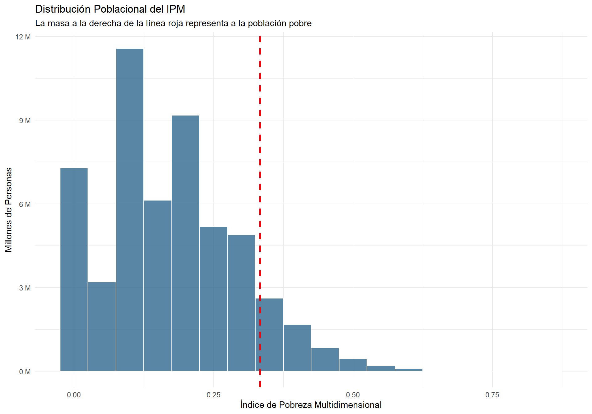
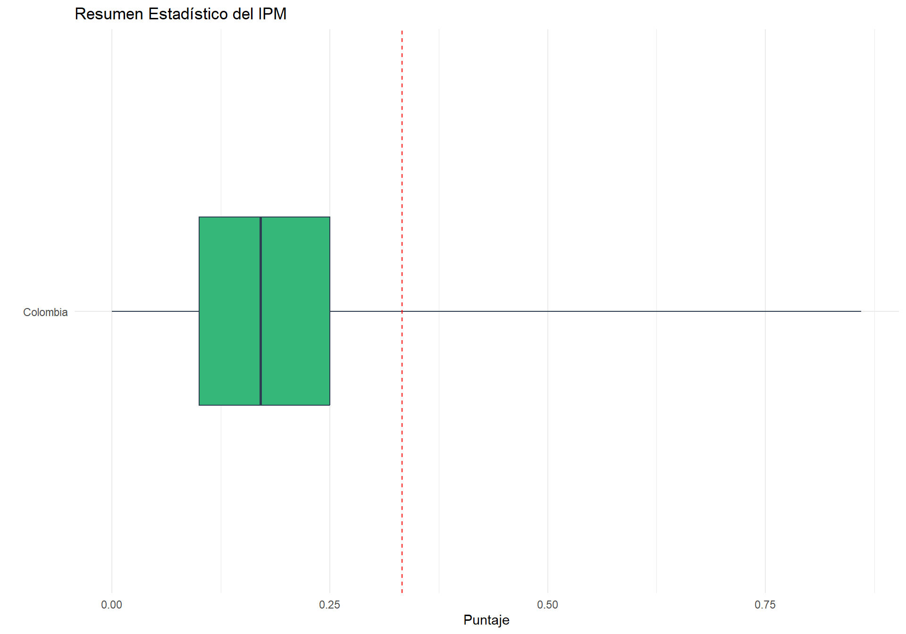
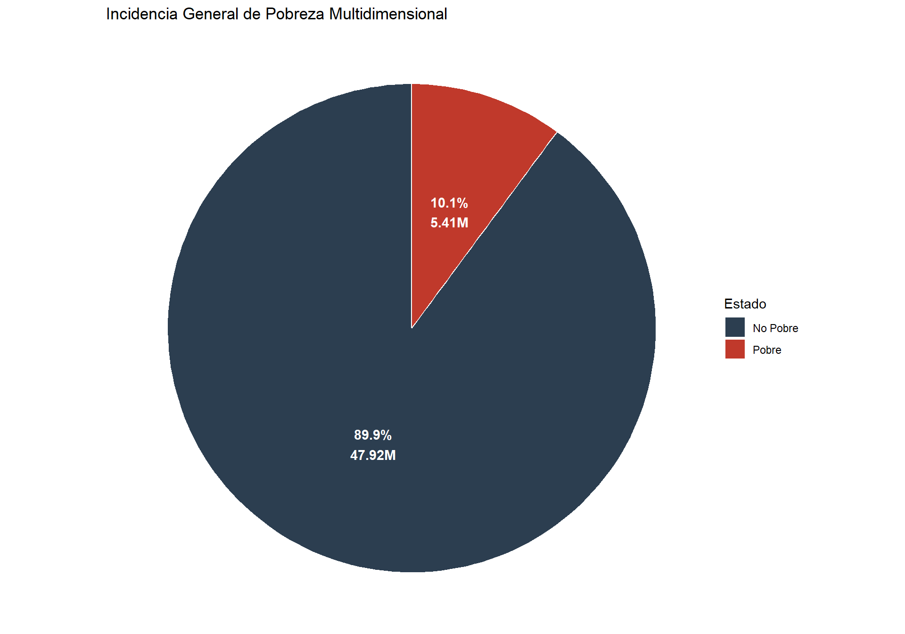
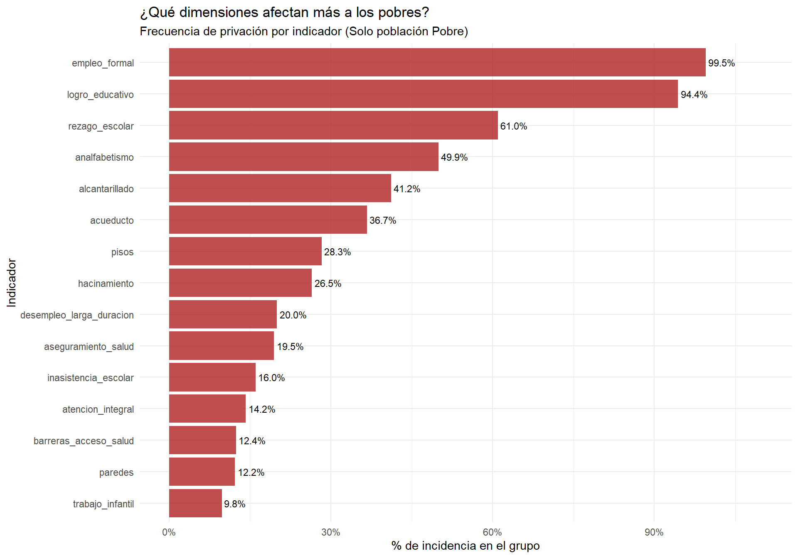
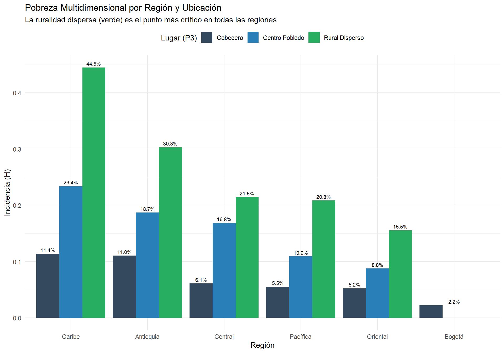
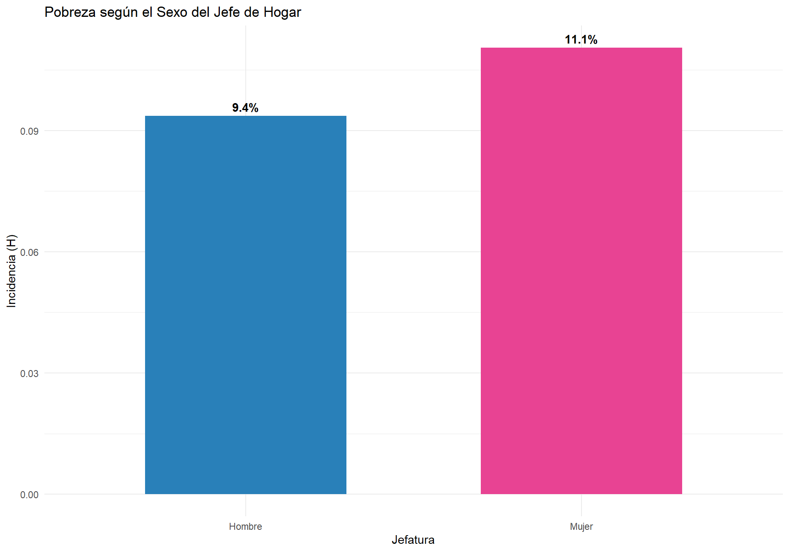

4 Analisis Exploratorio de Datos
Este análisis exploratorio de datos (EDA) examina la pobreza multidimensional en Colombia bajo una óptica integral, con el finde identificar las carencias estructurales en el acceso a derechos básicos. A través de la integración de microdatos de hogares, personas y viviendas, observando la incidencia de la pobreza mediante el Índice de Pobreza Multidimensional (IPM), desglosando el impacto de las 15 privaciones definidas por el DANE. Profundizando en las diferencias territoriales, entre lo urbano y lo rural, la heterogeneidad regional, la composicion de la pobreza y las brechas de género en la jefatura del hogar.
4.1 Carga y limpieza de los microdatos
Integramos las tres fuentes principales. Aquí cruzo la jefatura del hogar con las condiciones de vivienda para tener el perfil sociodemográfico completo.
## Cargamos los archivos crudos del 2025
df <- read_csv("HOGARES (DEPARTAMENTAL) 2025.csv")
df2 <- read_csv("PERSONAS (DEPARTAMENTAL) 2025.csv")
df3 <- read_csv("VIVIENDAS (DEPARTAMENTAL) 2025.csv")
## Extraigo jefatura (P6051 == 1) y cónyuge para identificar hogares solteros
jefe <- df2 %>%
filter(P6051 == 1) %>%
select(DIRECTORIO, P6020, P8587) %>%
distinct(DIRECTORIO, .keep_all = TRUE)
conyuge <- df2 %>%
filter(P6051 == 2) %>%
select(DIRECTORIO, P6020, P8587) %>%
distinct(DIRECTORIO, .keep_all = TRUE)
## Unión de bases: Vivienda + Hogar + Perfil del Jefe
jefe_full <- jefe %>%
left_join(conyuge, by = "DIRECTORIO", suffix = c("_jefe", "_conyuge")) %>%
mutate(soltero = if_else(!is.na(P6020_conyuge), 0, 1))
df <- df %>%
left_join(jefe_full, by ="DIRECTORIO") %>%
left_join(df3 %>% select(-SECUENCIA_ENCUESTA, -SECUENCIA_P), by ="DIRECTORIO")
## Ajuste de NA en variables de servicios y filtro de región
df <- df %>%
mutate(across(c(P1075, P1077S21, P1077S22, P1077S23), ~replace_na(., 2))) %>%
filter(!is.na(REGION))4.2 Distribución del IPM: El “Termómetro” de Carencias
Antes de dicotomizar (pobre/no pobre), analizamos el IPM como variable continua. Esto nos muestra qué tan cerca está la población del umbral crítico.
4.2.1 Visualización Cuartílica y Frecuencia
El histograma nos permite ver la masa de población que está “en riesgo” (cerca del 0.33), mientras que el boxplot resume la dispersión nacional.
## Diseño muestral para cálculos precisos
diseno <- df %>% as_survey_design(weights = FEXP)
## 1. Histograma de frecuencias
ggplot(df, aes(x = IPM, weight = FEXP)) +
geom_histogram(binwidth = 0.05, fill = "#31688e", color = "white", alpha = 0.8) +
geom_vline(xintercept = 0.333, linetype = "dashed", color = "red", size = 1) +
scale_y_continuous(labels = unit_format(unit = "M", scale = 1e-6)) +
labs(title = "Distribución Poblacional del IPM",
subtitle = "La masa a la derecha de la línea roja representa a la población pobre",
x = "Índice de Pobreza Multidimensional", y = "Millones de Personas") +
theme_minimal()
## 2. Boxplot descriptivo
res_y <- diseno %>%
summarise(
promedio = survey_mean(IPM, na.rm = TRUE),
desviacion = survey_sd(IPM, na.rm = TRUE),
minimo = min(IPM, na.rm = TRUE),
maximo = max(IPM, na.rm = TRUE),
q1 = survey_quantile(IPM, 0.25),
q2 = survey_quantile(IPM, 0.5),
q3 = survey_quantile(IPM, 0.75)
)
ggplot(res_y) +
geom_boxplot(aes(ymin = minimo, lower = q1_q25, middle = promedio, upper = q3_q75, ymax = maximo, x = "Colombia"),
stat = "identity", fill = "#35b779", color = "#2c3e50", width = 0.4) +
geom_hline(yintercept = 0.333, linetype = "dashed", color = "red") +
coord_flip() +
labs(title = "Resumen Estadístico del IPM", y = "Puntaje", x = "") +
theme_minimal()
| promedio | desviacion | minimo | maximo | q1_q25 | q2_q50 | q3_q75 |
|---|---|---|---|---|---|---|
| 0.1706441 | 0.1199547 | 0 | 0.86 | 0.1 | 0.15 | 0.25 |
- El IPM poblacional presenta un promedio de 0.1706 (\(sd=0.119\)). Adicionalmente el análisis por cuantiles muestra que al menos el 75% de la población alcanza un índice de hasta 0.25, lo que equivale a una acumulación de 3 a 4 privaciones según la ponderación del índice. Esto ubica a la gran mayoría de la población en una zona de vulnerabilidad crítica, pues estan a solo 1 o 2 carencias adicionales de superar el umbral de 0.33 y ser clasificados formalmente bajo la condición de pobreza multidimensional.
- Sesgo a la derecha y Concentración: La distribución no es normal; está fuertemente sesgada a la derecha. Esto indica que, aunque la mayoría de la población tiene niveles bajos de privación, existe una “cola” de personas que acumulan múltiples carencias críticas y simultáneas.
- Umbral de pobreza: La línea roja en \(0.33\) es el punto de corte. Solo la masa de población a la derecha de esa línea es considerada técnicamente pobre multidimensional, lo que permite separar visualmente la incidencia del problema.
- Volumen Absoluto vs. Proporción: la grafica se encuentra en millones de personas en lugar de una densidad de probabilidad, el gráfico resalta la magnitud real de la situacion social y Permite dimensionar, aunque las barras de la derecha sean más bajas, representan a millones de personas en situación de vulnerabilidad.
4.3 Incidencia (H): El dato oficial
La Incidencia (H) nos dice qué porcentaje de la población es pobre. Aquí vemos la foto general del país.
library(scales)
## 1. Preparamos los datos con la etiqueta ya lista
tabla_pobreza <- diseno %>%
group_by(POBRE) %>%
summarise(
conteo_millones = survey_total() / 1e6,
proporcion = survey_mean()
) %>%
mutate(
condicion = ifelse(POBRE == 1, "Pobre", "No Pobre"),
etiqueta = paste0(percent(proporcion, accuracy = 0.1), "\n", round(conteo_millones, 2), "M")
)
## 2. Graficamos
ggplot(tabla_pobreza, aes(x = "", y = proporcion, fill = condicion)) +
geom_bar(stat = "identity", width = 1, color = "white") +
coord_polar("y", start = 0) +
geom_text(aes(label = etiqueta),
position = position_stack(vjust = 0.5),
color = "white",
fontface = "bold") +
scale_fill_manual(values = c("No Pobre" = "#2c3e50", "Pobre" = "#c0392b")) +
labs(title = "Incidencia General de Pobreza Multidimensional", fill = "Estado") +
theme_void()
A un nivel poblacional, el 10% de los colombianos esta clasificado como pobre dimensional, esto se traduce en 5.41 millones de personas, equivale a la población total de un país como Costa Rica o la población total de países de la Unión Europea como Irlanda o Croacia. En términos comparativos, estamos analizando una masa poblacional equivalente a la totalidad de los habitantes de Noruega, lo que resalta la escala masiva del desafío para la política pública nacional.
4.4 Composición de la Pobreza: Perfil de Privaciones
Filtramos solo a los pobres para entender qué carencias comparten.
Nota: La informalidad y el bajo logro educativo suelen ser casi universales en este grupo.
## Análisis de incidencia dentro del grupo de pobres
resumen_privaciones <- df %>%
filter(POBRE == 1) %>%
as_survey_design(weights = FEXP) %>%
summarise(across(11:25, list(proporcion = ~survey_mean(.x == 1, na.rm = TRUE))))
tabla_final_privaciones <- resumen_privaciones %>%
pivot_longer(everything(), names_to = "Variable", values_to = "proporcion") %>%
filter(!str_detect(Variable, "_se$")) %>%
mutate(Variable = str_remove(Variable, "_proporcion")) %>%
arrange(desc(proporcion))
## Gráfico de barras comparativo
ggplot(tabla_final_privaciones, aes(x = reorder(Variable, proporcion), y = proporcion)) +
geom_col(fill = "firebrick", alpha = 0.8) +
geom_text(aes(label = percent(proporcion, accuracy = 0.1)), hjust = -0.1, size = 3) +
coord_flip() +
scale_y_continuous(labels = percent, limits = c(0, 1.1)) +
labs(title = "¿Qué dimensiones afectan más a los pobres?",
subtitle = "Frecuencia de privación por indicador (Solo población Pobre)",
x = "Indicador", y = "% de incidencia en el grupo") +
theme_minimal()
Estos factores presnetan como esta compuesta la pobreza en colombia, mostrando una fuerte presencia de desempleo, carencias de condiciones academicas y acceso a servicios publicos.
## 1. Preparación de datos incluyendo FEXP
df_solo_carencia_pesado <- df %>%
filter(POBRE == 1) %>%
select(IPM, FEXP, 11:25) %>%
pivot_longer(cols = c(-IPM, -FEXP), names_to = "Indicador", values_to = "Privacion") %>%
filter(Privacion == 1)
## 2. Gráfico con pesos poblacionales
ggplot(df_solo_carencia_pesado,
aes(x = reorder(Indicador, IPM, FUN = function(x) weighted.mean(x, w = df_solo_carencia_pesado$FEXP[match(x, df_solo_carencia_pesado$IPM)])),
y = IPM,
weight = FEXP)) +
geom_boxplot(fill = "firebrick", alpha = 0.7, outlier.alpha = 0.2, outlier.size = 0.5) +
coord_flip() +
labs(
title = "Intensidad del IPM según Dimensión (Población Pobre)",
subtitle = "Distribución ponderada por Factor de Expansión (FEXP)",
x = "Indicador de Privación",
y = "Valor del IPM (Intensidad)"
) +
theme_minimal() +
theme(
panel.grid.minor = element_blank(),
axis.text.y = element_text(size = 10, face = "bold")
)
Este grafico nos permite permite identificar qué privaciones pesan mas sobre el un IPM. el grafico representa la realidad de los 5.41 millones de personas identificadas en pobreza.
Simultaneidad de privaciones: Indicadores como “Paredes”, “Inasistencia Escolar” y “Trabajo Infantil” presentan las medianas de IPM más altas (desplazadas hacia la derecha). Esto indica que estas privaciones no suelen presentarse solas, es decir una persona con deficiencias en la estructura de su vivienda o con niños fuera del sistema escolar tiende a acumular un paquete de privaciones mucho más pesado, elevando su índice cerca del 0.45 - 0.50.
Carencias Base vs. Carencias Críticas: Es notable que el “Empleo Formal” y el “Logro Educativo”, a pesar de ser los más frecuentes en la población (según el gráfico de barras anterior), tienen medianas de intensidad más bajas y cajas más compactas. Esto confirma que son carencias comunes o transversales ya que afectan tanto a los “pobres extremos” como a los que están apenas por encima del umbral de 0.33, no son por si solas la razon de la pobreza, sino que son comun denominador del inicio de la pobreza multidimensional.
Heterogeneidad y Casos Críticos (Outliers): La presencia de valores extremos que alcanzan un IPM de 0.8 en dimensiones como “Acueducto”, “Alcantarillado” e “Inasistencia Escolar” revela la existencia de focos de pobreza multidimensional extrema. Estos individuos sufren privaciones en casi la totalidad de las 15 dimensiones analizadas, ellos representan los desafíos más urgentes para la política pública.
Conclusión para la política pública: Mientras que el empleo formal es el problema más extendido, la intervención en vivienda (paredes y hacinamiento) y educación infantil es lo que más rápido podría reducir la “intensidad” de la pobreza, ya que son las dimensiones que mantienen a los hogares atrapados en los valores más altos del IPM.
4.5 Brechas Territoriales: Región y Clase (P3)
Aquí cruzamos las regiones con el tipo de asentamiento. Es evidente el “gradiente de pobreza”: a mayor ruralidad, mayor incidencia.
nombres_regiones <- c("1" = "Caribe", "2" = "Oriental", "3" = "Central",
"4" = "Pacífica", "5" = "Antioquia", "6" = "Bogotá")
tabla_plot <- df %>%
as_survey_design(weights = FEXP) %>%
group_by(REGION, P3) %>%
summarise(incidencia = survey_mean(POBRE, na.rm = TRUE)) %>%
mutate(
Nombre_Region = nombres_regiones[as.character(REGION)],
Tipo_Lugar = case_when(P3 == 1 ~ "Cabecera", P3 == 2 ~ "Centro Poblado", P3 == 3 ~ "Rural Disperso")
) %>%
mutate(Tipo_Lugar = factor(Tipo_Lugar, levels = c("Cabecera", "Centro Poblado", "Rural Disperso")))
## Gráfico Unstacked para comparar brechas
ggplot(tabla_plot, aes(x = reorder(Nombre_Region, -incidencia), y = incidencia, fill = Tipo_Lugar)) +
geom_bar(stat = "identity", position = position_dodge(preserve = "single")) +
geom_text(aes(label = percent(incidencia, accuracy = 0.1)),
position = position_dodge(width = 0.9), vjust = -0.5, size = 2.5) +
scale_fill_manual(values = c("#34495e", "#2980b9", "#27ae60")) +
labs(title = "Pobreza Multidimensional por Región y Ubicación",
subtitle = "La ruralidad dispersa (verde) es el punto más crítico en todas las regiones",
x = "Región", y = "Incidencia (H)", fill = "Lugar (P3)") +
theme_minimal() + theme(legend.position = "top")
En todas las regiones, sin excepción, la incidencia en la Ruralidad Dispersa (verde) es drásticamente superior a la de las Cabeceras (gris). El caso más alarmante es la Región Caribe, donde la pobreza rural alcanza el 44.5%, casi cuadruplicando la incidencia de su zona urbana (11.4%)
Existe un gradiente de pobreza que va de norte a sur y de la periferia al centro. Mientras que Bogotá presenta una incidencia mínima (2.2%), regiones como la Caribe y Antioquia muestran niveles críticos en sus zonas rurales y centros poblados, lo que sugiere que el desarrollo económico de los centros urbanos no está permeando a sus periferias.
La pobreza en este contexto no es solo un fenómeno de ingresos, sino un fenómeno de aislamiento geográfico. La política pública debe priorizar la convergencia regional, ya que ser pobre en la ruralidad del Caribe es una realidad estadística radicalmente distinta a serlo en Bogotá.
4.6 Perspectiva de Género en la Jefatura
¿Influye el sexo del jefe en la pobreza del hogar? Los datos sugieren una brecha que debe ser analizada bajo el lente de las cargas de cuidado.
tabla_jefatura <- diseno %>%
group_by(P6020_jefe) %>%
summarise(incidencia = survey_mean(POBRE, na.rm = TRUE)) %>%
mutate(Sexo = ifelse(P6020_jefe == 1, "Hombre", "Mujer"))
ggplot(tabla_jefatura, aes(x = Sexo, y = incidencia, fill = Sexo)) +
geom_col(width = 0.6, show.legend = FALSE) +
geom_text(aes(label = percent(incidencia, accuracy = 0.1)), vjust = -0.5, fontface = "bold") +
scale_fill_manual(values = c("#2980b9", "#e84393")) +
labs(title = "Pobreza según el Sexo del Jefe de Hogar",
y = "Incidencia (H)", x = "Jefatura") +
theme_minimal()
Al observar la jefatura del hogar, los datos muestran una clara desventaja para las mujeres. La incidencia de pobreza en hogares liderados por mujeres (11.1%) es significativamente mayor que en los liderados por hombres (9.4%). Esta brecha de 1.7 puntos porcentuales sugiere que las jefas de hogar enfrentan barreras adicionales, posiblemente asociadas a la carga de cuidado no remunerado y a condiciones de mayor precariedad en el mercado laboral.